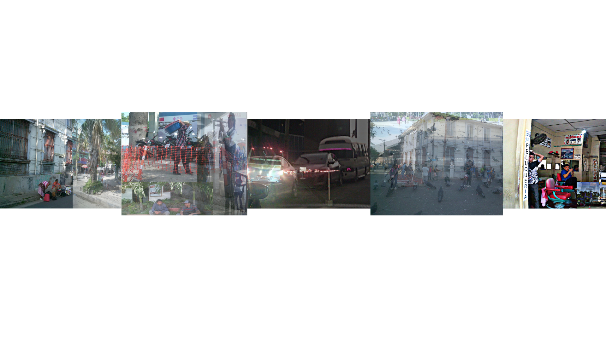
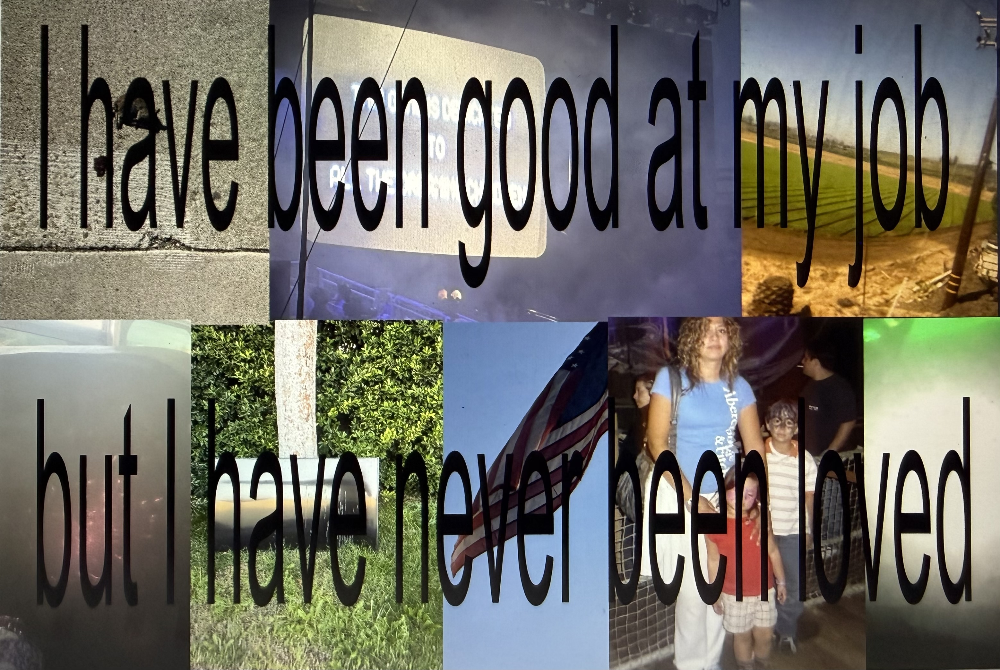
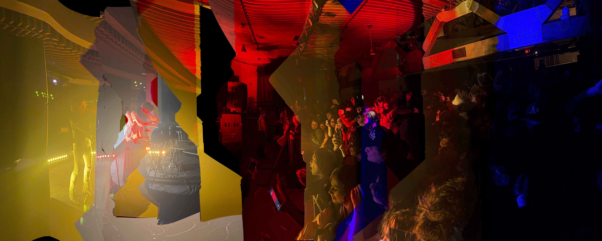
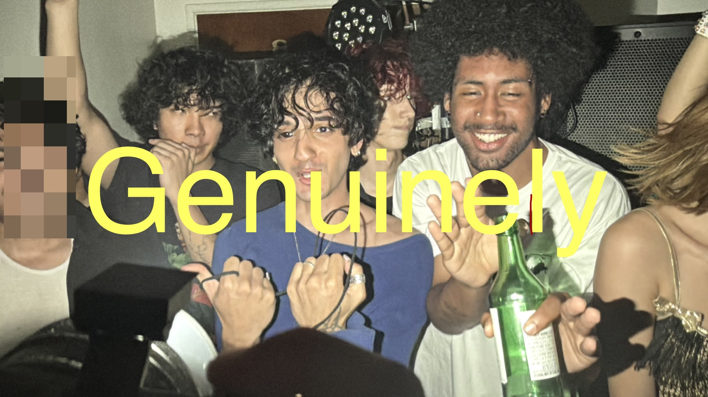
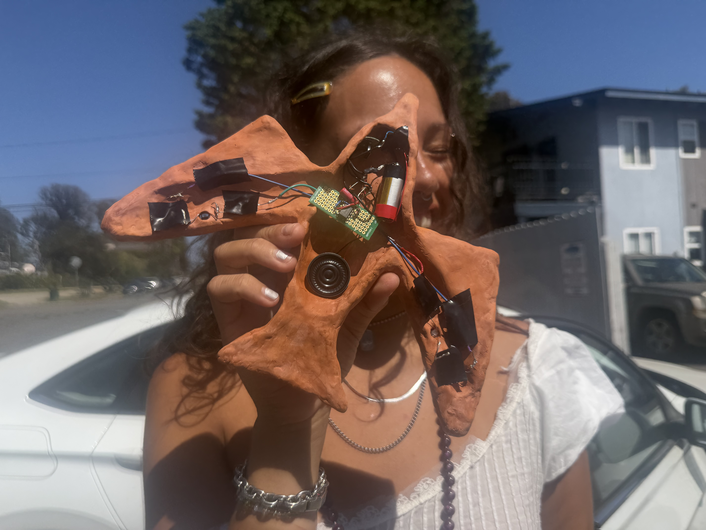
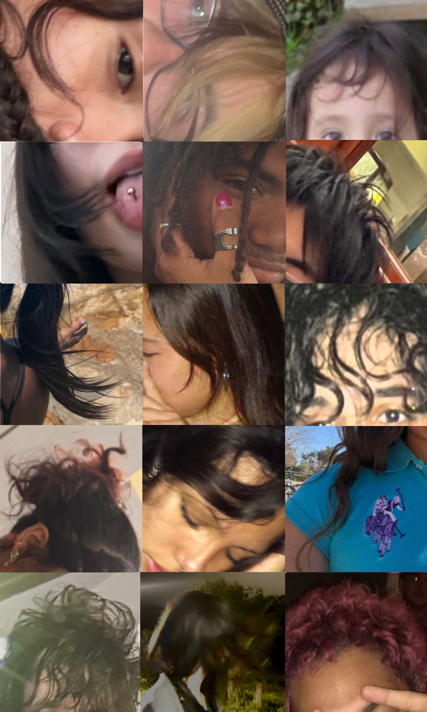
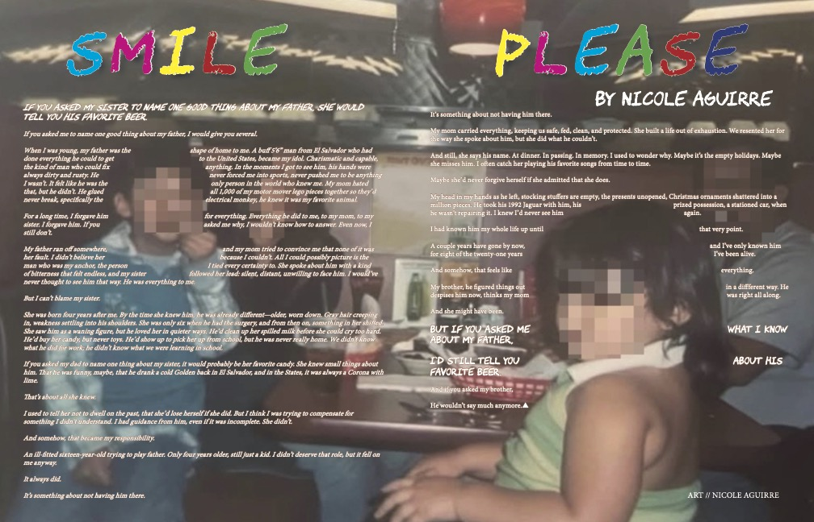

01 Los Caminos De La Vida

This project documents the lives and landscapes of El Salvador during my visit last summer. I photographed the places I encountered and layered the images according to their visual and personal connections, creating compositions that reflect the overlapping experiences of place and identity. I created this work with my cousin in mind, an immigrant now living in Los Angeles who had been away from El Salvador for four years. I wanted to offer him a glimpse of a country that had continued to change in his absence, particularly amid the political and social shifts of the new presidency.
02 Hardworking Woman

This work is a collage at its core, combining imagery and text to reflect on a lived experience. I assembled the photographs through an external digital platform, selecting and layering images in response to the words that accompany them. The text reads: “I have been good at my job, but I have never been loved.” I do not remember where I first encountered this sentence, but it stayed with me. I began to recognize its sentiment in the experiences of Latinas and women more broadly, particularly in the ways labor and self-sufficiency can become deeply intertwined with identity.
03 Hot Fun

This panoramic photograph captures the exhilarating experience of electronic music moving through a crowd. Each frame was taken seconds apart, allowing the images to overlap and create a sense of continuous motion and collective energy. The resulting panorama attempts to translate an experience that is difficult to articulate through language. The intensity of sound, movement, light, and shared excitement within a crowd.
04 My Palace of Peace
This slow-motion video captures the duo Frost Children performing for UCSB students at the Hub. Drawing an intense and energetic response from the crowd. I chose to slow the footage down to emphasize the movement, emotion, and visual intensity of the performance. The contrast between the chaotic energy of the crowd and the classical composition Suite for Violoncello in G major by Jan Vogler creates an unexpected tension, making this performance seen through a different lens.
05 Genuinely

In this piece, the expressions and body language reflect the excitement of the space, while the surrounding lights intensify the atmosphere and energy of the performance. The blurred face on the left introduces a sense of anonymity, allowing the image to feel less like a portrait of specific individuals and more like a documentation of a shared experience. Along with the visible expressions of excitement, it draws attention to the emotional connection between the performers and the audience. It's genuine.
06 I Can Sing, I Can Fly

This work is a hybrid of sculpture and sound, created by transforming the internal mechanics of a vaporizer into a functional synthesizer. Photo sensors embedded in the bird’s wings connect to the electronics within, allowing movement and light to interact with the instrument. A speaker, created by my co-creator Acucar Pinto, is incorporated into the bird’s tail, completing its sound-producing system. The mechanical components are enclosed within a terracotta clay sculpture that I designed and constructed in the form of a bird. The bird became an intentional symbol of voice and freedom, connecting the physical act of producing sound with the idea of a spirit finding expression.
07 Hair Takes Miles

Hair Takes Miles is a photographic collage composed of images of my friends and loved ones, focusing specifically on their hair. I assembled the photographs through an external digital platform, initially imagining the work as a visual framework for a poem or piece of prose. Instead, the collage developed into something more personal and cathartic. Hair carries a particular significance in how we present ourselves to the world. It can communicate identity and personality, and intention before we ever speak. In many ways, hair speaks for us when we cannot; it becomes a visual extension of how we want to be perceived and remembered by others.
08 Smile, Please

This prose piece was created for an English creative writing course and designed in Adobe InDesign. At its center is a photograph of my family, with the blurred faces representing my brother and me. The image serves as both a document of our shared childhood and a starting point for examining how differently the same experience can be remembered. The piece is divided between my brother’s perspective on the left and my own on the right, allowing two interpretations of the same childhood to exist alongside one another. Although we experienced many of the same moments, our memories and understandings of them are distinctly our own.
09 Before I Die
This video is an edited collection of iMovie clips featuring people I love, including those I have not seen in years but still carry affection for. I arranged these fragments of memory over a section of Theorem by Ear, a song that evokes a sense of nostalgia and reflection on people and time. The piece became especially significant to me following a recent life-threatening experience that profoundly altered the way I understood memory and mortality. In the aftermath, I found myself reflecting on the people and moments that have shaped my life, both those that remain close and those that exist only in memory.